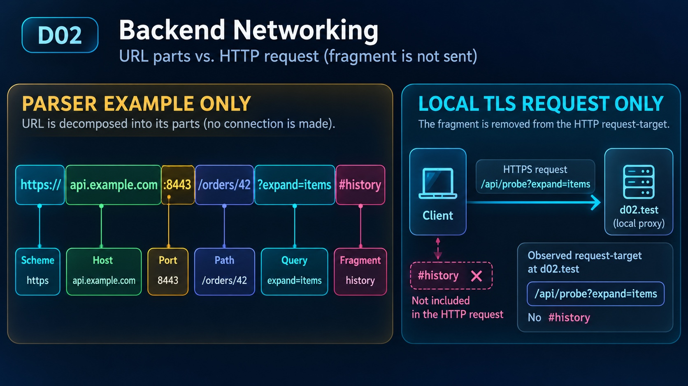

서버·네트워크 · URL·연결·TLS·HTTP 관찰
URL의 어떤 부분이 HTTP 요청에 실릴까요?
원문 Java를 그대로 추가 Java21·Boot4.1.1의 private loopback 앱에서 실행했습니다. 추가 DNS UDP·TCP·검증 활성 TLS proxy 관측이며 원문 Java25/8080·Nginx·외부 DNS/경로·firewall/NAT·QUIC·전달 헤더 정책은 미실행입니다.
추가 Python URL parser + 별도 실제 loopback TLS 요청
api.example.com URL은 parser 입력일 뿐 해당 호스트에 요청하지 않았습니다. 실제 요청은 추가 client serializer가 d02.test loopback proxy에 보낸 별도 사례이며 브라우저 캡처가 아닙니다.
URL의 여섯 구성요소
원문의 예시 URL을 Python으로 나눴습니다. 포트8443은 이 문자열의 값이며 실제 앱의 listen port가 아닙니다.

지금의 요청·연결·응답 관찰값
함께 읽을 코드
원문·추가 loopback fixture·명시적 모델의 짧은 발췌입니다. 강조는 설명하는 위치이며 실시간 실행 줄이 아닙니다.
코드 강조는 설명 위치이며 실시간 실행 줄이 아닙니다. 순서는 각 실제 관측을 읽기 위한 설명이며 원문 전체의 검증 완료를 뜻하지 않습니다.
실제 관측·모델 근거 보기
최종 frozen 실제 JSON/PASS 발췌입니다. 실제 CHECK17개와 명시적 모델3개를 구분하며 모델 장면에는 PASS를 만들지 않습니다. 각 관측은 private loopback fixture 범위입니다. 원문 전체의 구현·검증 완료를 뜻하지 않습니다.
원문·추가 실험 전체 코드와 실제 검증 근거
원문304줄9fence와 완전한 Java 소스를 보존했습니다. 원문 Java 그대로 추가 Java21/Boot4.1.1/Tomcat11.0.24·새127.0.0.1/port0에서 실제 TCP /probe200/ok와 미등록404를 확인했습니다. Java25·8080·Kotlin 전체 설정을 실행한 결과는 아닙니다. 의존성39개 SHA와 main·독립17CHECK/3모델 frozen 일치를 기록했습니다.
DNS UDP toy는 자체 loopback의 고정 응답이고 documentation IP로 HTTP를 보내지 않았습니다. TTL60 cache는 고정 clock 모델입니다. 현재 Mac의 listen 전 connect timeout·listen 뒤 TCP·의도한 무응답 read deadline을 구분합니다. timeout 하나로 방화벽 원인을 확정하지 않습니다.
새0700 run의 demo CA/leaf와0600 개인키를 사용했고 인증서·hostname·strict X509 검증을 유지했습니다. 시스템 truststore를 바꾸지 않았습니다. 추가 Python proxy에서 TLS를 끝내고 원문 Boot에 HTTP로 전달했습니다. 경로 변환200/변환 생략404와 이름 불일치·신뢰 CA 부재의 HTTP전 거부를 관찰했습니다. Nginx·실제 resolver·root/TLD·NAT/firewall·외부 경로·QUIC·Forwarded 정책을 실행한 것은 아닙니다. 자체 서버·thread·socket은 종료했습니다.
원문·추가 실행 범위와 실패 교정
# D02 원문 Java와 추가 loopback 실험
원문304줄·9fence(Mermaid3/text1/Kotlin1/properties1/Java1/bash2)를 전문 검토하고 SHA·원문 바이트를 보존했다. 이전 연구 Markdown도 현재 원문과 바이트가 같았다. block-07.java를 ProbeApplication.java로 그대로 복사해 컴파일·실행했다. 추가 Gradle/JDK21 환경·실행 인수만 다르며 원문 Java25/8080/Kotlin 전체 설정·외부 dig/openssl 명령을 그대로 실행한 결과가 아니다.
실제 Java21.0.6/Boot4.1.1/Spring7.0.9/Tomcat11.0.24와 runtime dependency39개의 SHA를 기록했다. Boot는 매번 새0700 run의 자체 프로세스이며 server.address=127.0.0.1/server.port=0 인수로 임시 포트를 할당했다. 포트는 시작 로그에서 읽고 해당 자체 주소에만 요청했다. /probe는200/body ok, /not-mapped는404다. 실제 TCP 요청이며 MockMvc가 아니다. sourceJava의 /probe 외 새 route를 추가하지 않았다. DB·학습자 서버·기존8080·외부 클라이언트·방화벽·NAT를 사용하지 않았다.
URL parser 예제 https://api.example.com:8443/orders/42?expand=items#history는 분해만 했다. 이 도메인으로 접속하지 않았다. 실제 별도 TLS 요청은 d02.test의 loopback proxy에 연결했고 /api/probe?expand=items가 관찰됐다. client의 fragment history를 serializer에서 제외했다. Python client와 proxy 관찰이며 브라우저 패킷 캡처가 아니다. DNS 예제의 documentation IP와 실제 loopback 연결 주소도 구분한다.
추가 자체 bound socket은 listen 전 이 Mac에서 connect timeout을 관찰했고 listen 뒤에는 TCP 연결·accept가 성공했다. 후자는 HTTP 응답 검사가 아니다. 별도 socket은 연결한 뒤 앱이 의도적으로 아무 byte도 보내지 않아 설정한 read deadline0.2초에 도달했다. 0.2초는 설정값이며 측정 지연·성능이 아니다. 첫 관찰기는 미수신 socket이 ECONNREFUSED일 것이라고 잘못 가정해 실패했다. 최소 재현에서 TimeoutError/errno없음을 확인하고 실제 실패 종류를 기록하도록 교정했다. timeout만으로 방화벽·패킷손실·일반 OS 동작을 확정하지 않는다.
별도 UDP DNS toy는 새 loopback port에서 고정 packet을 주고받았다. A=203.0.113.10, AAAA=2001:db8::10, CNAME=origin.d02.test, 정상 TTL60/answer1, NXDOMAIN RCODE3/answer0, SERVFAIL RCODE2/answer0이다. 원문 외부 DNS·OS resolver·root/TLD·위임·실제 authoritative 운영·DNSSEC·대규모 상호운용성을 실행하지 않았다. CNAME packet이 이름을 답한 것과 HTTP redirect는 별개이며 위 IP에 HTTP를 보내지 않았다. 고정 clock의 t0 miss/t30 hit/t60 expired·누적 query2는 추가 Python cache 모델이고 실제 기다림·OS/browser cache 관찰이 아니다.
TLS는 매회 새 demo CA/leaf와 RSA key를 자체 run 안에 만들었다. 개인키2개는0600이고 상위run0700이다. 모든 일반 로그가0600이라고 주장하지 않는다. CA는 이 client의 SSLContext에만 넣었고 OS/브라우저 truststore는 변경하지 않았다. 인증서·hostname 검증과 strict X509를 유지한다. 첫 CA에는 keyUsage가 없어 Python 기본 strict 검증이 거부했다. CA/leaf의 basicConstraints·keyUsage·식별자를 보완했고 검증 옵션을 끄지 않았다. 정상 chain/name/SNI d02.test는 성공하고 wrong.d02.test와 신뢰 CA가 없는 client는 TLS 검증에서 거부돼 HTTP handler 추가0이었다. 만료·폐기/CRL/전체 PKI·운영 인증서를 검증한 결과가 아니다.
추가 Python TLS termination proxy는 HTTP upstream으로 원문 Boot에 전달했다. /api/probe?expand=items를 /probe?expand=items로 바꾸면200/ok였고, 추가 X-D02-Rewrite=off 입력으로 변환을 끄면 /api/probe 그대로 전달돼404였다. 이 제어 header는 실험 분기용이며 Forwarded 신뢰 정책과 별개다. Nginx proxy_pass 제품·일반 URI 정규화 동등성·LB·운영 TLS 구간을 실측한 결과가 아니다. 앞단 TLS가 내부 HTTP까지 암호화한다는 뜻도 아니다.
실제17CHECK와 별도3모델을 구분한다. bind-and-route의0.0.0.0/외부 경로, transport-and-trust의HTTP3/QUIC와Forwarded 신뢰는 원문 개념이다. wildcard bind/외부 노출·실제 L4/L7·QUIC·TCP handshake packet capture·신뢰 proxy 정책 적용은 없다. HTTP404와 TLS 거부·connect/read deadline은 실행한 계층과 입력이 달라 생긴 관찰이며 상태나 증상 하나만으로 일반 원인을 단정하지 않는다.
finally에서 자체 DNS thread/socket·proxy server/thread와 Boot subprocess만 종료했다. 자체 Boot 포트 닫힘과 프로세스 종료를 확인했다. 전역 kill·서비스·DNS/hosts/firewall/trust 설정을 바꾸지 않았다. main final freeze 뒤 새 run의 일반 replay와 별도 temp 사본의 독립 재현에서17검사·3모델 전체 frozen이 일치했다. 일반 재현은 `python3 docs/design/d02-2026-10-20/source-proof/run-proof.py --runtime-root LOCAL_HOME/research/javaexperience-d02-20261020/_data/runtime`이며 --freeze를 넣지 않는다.
런타임 버전은 실행별 runtime-last.json으로 구분한다. main 마지막 replay는 Python3.14.3/linkedOpenSSL3.6.3/CLI OpenSSL3.6.3, 독립 담당자의 환경은 Python3.13.1/linkedOpenSSL3.6.2/CLI3.6.2였다. 두 경로의 canonical 관찰은 같고 모두 strict 검증·TLS1.3을 확인했다. 그 전에 별도 shell에서 조회한 CLI OpenSSL3.6.2를 main 최종 실행 버전으로 쓰지 않는다. 날짜·임시 PID/port/CA bytes·인증서 기간·로그 시간과 절대 경로는 raw 자료이며 frozen 비교값으로 위조하거나 고정하지 않았다.
공식 조사에서 RFC1035는 A/CNAME/RCODE, AAAA는 RFC3596으로 근거를 나눴다. DNS 용어는8499보다 새9499도 대조했다. Boot4.1 servlet URL이 current generic 문서로 redirect된 점과 actual4.1.1 runtime을 구분한다. 원문 Java25·기존 설정 전체·외부 DNS·Nginx·운영 경로·패킷/SLA/보안 인증·모든 네트워크 계층을 완료했다는 주장은 하지 않는다.
원문 SHA·9개 fence
{
"source": "docs/knowledge/D02-server-network-basics.md",
"sha256": "6f2fe2c7c720eef33f939ed06b459c2311a8615fbc53ce68acc890a18c80fbaf",
"lines": 304,
"originalBlocks": [
{
"block": 1,
"language": "mermaid",
"file": "block-01.mmd",
"sha256": "37a0491d2919e301a44ec1b327bf066d6460240ea25791924d5ce4999862046e"
},
{
"block": 2,
"language": "text",
"file": "block-02.txt",
"sha256": "958eecc308fb7230344d33dec87960b25e8eb2fce63a36927e2e78516adcebd2"
},
{
"block": 3,
"language": "mermaid",
"file": "block-03.mmd",
"sha256": "79f76b3e5b0d89fc482c73239ccfef1d165525cfa73547edabf689f62e747058"
},
{
"block": 4,
"language": "mermaid",
"file": "block-04.mmd",
"sha256": "6df811aa1eb67eb6633d6ea6444fc0f8c090d3f6880827a0896bde5c6abb6367"
},
{
"block": 5,
"language": "kotlin",
"file": "block-05.kts",
"sha256": "cfc204fb5bed49ca27d9e0ae033506598724f562e392c34041f2ef234f84b259"
},
{
"block": 6,
"language": "properties",
"file": "block-06.properties",
"sha256": "31efeb783903a3a459a07f0fc59c900bc2f77a49297e5f4cadf89d7e1fc7fc16"
},
{
"block": 7,
"language": "java",
"file": "block-07.java",
"sha256": "7bdedb77bf5e6c64d51ae4358b028f7eada6e5680bd8ad3ab0a46c4c4e21a4c8"
},
{
"block": 8,
"language": "bash",
"file": "block-08.sh",
"sha256": "1fba7818768ec1ca2e2717aeed369df9b732695441a7d42d1872c3d43833b550"
},
{
"block": 9,
"language": "bash",
"file": "block-09.sh",
"sha256": "fd4ff8ac8f904dc74ed2ffb32fb80fae19e1b84cc39ee7232df1f96270824d4f"
}
],
"status": "original304lines9fences and completeJava byteexact; extraJava21Boot4.1.1/39deps/localDNS-TCP-TLS-Pythonproxy17CHECK+3models mainfresh/independent wholefrozenmatch; sourceJava25/8080/externalDNS/nginx/QUIC/firewall/NAT notrun"
}실제 CHECK17·별도 모델3
{
"checks": [
"extra-bound-without-listen-no-tcp-connection",
"extra-client-fragment-not-sent-over-http",
"extra-connected-read-deadline-not-firewall-proof",
"extra-dns-cname-is-name-answer",
"extra-dns-negative-rcodes-differ",
"extra-dns-udp-address-records",
"extra-listen-accepts-tcp-not-http",
"extra-no-rewrite-reaches-source-404",
"extra-tls-termination-http-upstream-rewrite",
"extra-tls-untrusted-ca-rejected",
"extra-tls-valid-chain-name-and-sni",
"extra-tls-wrong-name-rejected",
"extra-url-parts-are-separate",
"private-boot-and-proxy-resources-closed",
"source-java-unchanged-real-boot-loopback",
"source-missing-route-real-tcp-404",
"source-probe-real-tcp-200-ok"
],
"facts": {
"source-java-unchanged-real-boot-loopback": {
"sourceJavaByteExact": true,
"javaVersion": "21.0.6",
"bootVersion": "4.1.1",
"boundAddress": "127.0.0.1",
"scope": "source Java unchanged; extra Java21 Gradle/loopback port0 args, not source Java25/8080 setup"
},
"source-probe-real-tcp-200-ok": {
"status": 200,
"body": "ok",
"path": "/probe"
},
"source-missing-route-real-tcp-404": {
"status": 404,
"path": "/not-mapped",
"scope": "HTTP reached this fixture; not DNS failure"
},
"extra-url-parts-are-separate": {
"scheme": "https",
"host": "api.example.com",
"port": 8443,
"path": "/orders/42",
"query": "expand=items",
"fragment": "history",
"scope": "Python URL parser; no request to example.com"
},
"extra-bound-without-listen-no-tcp-connection": {
"bound": true,
"listening": false,
"observedFailure": "timeout",
"scope": "this OS/own bound socket; no universal refused-vs-timeout or firewall diagnosis"
},
"extra-listen-accepts-tcp-not-http": {
"tcpConnected": true,
"httpResponseObserved": false,
"scope": "same own socket after listen; no HTTP handler"
},
"extra-connected-read-deadline-not-firewall-proof": {
"tcpConnected": true,
"applicationSentBytes": 0,
"readDeadlineReached": true,
"configuredReadDeadlineSeconds": 0.2,
"scope": "server deliberately silent; no latency or packet-loss measurement"
},
"extra-dns-udp-address-records": {
"A": {
"rcode": 0,
"answers": 1,
"value": "203.0.113.10",
"ttl": 60
},
"AAAA": {
"rcode": 0,
"answers": 1,
"value": "2001:db8::10",
"ttl": 60
},
"scope": "local fixed UDP DNS fixture; documentation IPs, not real resolver or HTTP health"
},
"extra-dns-cname-is-name-answer": {
"CNAME": {
"rcode": 0,
"answers": 1,
"value": "origin.d02.test",
"ttl": 60
},
"httpRedirectExecuted": false,
"scope": "DNS packet only; no HTTP connection to alias/target"
},
"extra-dns-negative-rcodes-differ": {
"NXDOMAIN": {
"rcode": 3,
"answers": 0,
"value": null,
"ttl": null
},
"SERVFAIL": {
"rcode": 2,
"answers": 0,
"value": null,
"ttl": null
},
"scope": "two intentionally fixed fixture responses; no external DNS failure"
},
"extra-client-fragment-not-sent-over-http": {
"clientFragment": "history",
"observedRequestTarget": "/api/probe?expand=items",
"scope": "additional Python client serializer and actual loopback TLS request, not browser capture"
},
"extra-tls-valid-chain-name-and-sni": {
"certificateAccepted": true,
"hostname": "d02.test",
"sniObserved": "d02.test",
"scope": "fresh demo CA trusted only by this client context; no system trust change"
},
"extra-tls-termination-http-upstream-rewrite": {
"front": "TLS",
"upstream": "HTTP",
"request": {
"incoming": "/api/probe?expand=items",
"host": "d02.test",
"upstream": "/probe?expand=items",
"status": 200
},
"body": "ok",
"scope": "extra Python proxy to source Boot; not Nginx or production LB"
},
"extra-no-rewrite-reaches-source-404": {
"rewrite": false,
"request": {
"incoming": "/api/probe",
"host": "d02.test",
"upstream": "/api/probe",
"status": 404
},
"scope": "same proxy/source app; HTTP404 not a TLS or DNS error"
},
"extra-tls-wrong-name-rejected": {
"certificateVerificationRejected": true,
"httpHandlerCallsAdded": 0,
"scope": "verification remains enabled; no HTTP after failed certificate validation"
},
"extra-tls-untrusted-ca-rejected": {
"certificateVerificationRejected": true,
"httpHandlerCallsAdded": 0,
"scope": "verification remains enabled; no HTTP after failed certificate validation"
},
"private-boot-and-proxy-resources-closed": {
"bootProcessEnded": true,
"bootPortClosed": true,
"proxyThreadsEnded": true,
"dnsThreadEnded": true,
"scope": "own resources only; no global process/service commands"
}
},
"models": {
"dns-cache": {
"kind": "added fixed-clock cache model",
"ttl": 60,
"times": [
0,
30,
60
],
"hit": [
false,
true,
false
],
"queries": 2,
"scope": "not OS/browser/recursive resolver cache observation"
},
"bind-and-route": {
"kind": "source-derived concept",
"loopback": "127.0.0.1",
"wildcardIPv4": "0.0.0.0",
"externalReachabilityProven": false,
"scope": "no wildcard bind or external/firewall/NAT route experiment"
},
"transport-and-trust": {
"kind": "source-derived concept",
"http1and2": "TCP",
"http3": "QUIC/UDP",
"forwardedHeaderTrustedWithoutBoundary": false,
"scope": "no QUIC/packet handshake capture/L4 or L7 product/forwarded trust enforcement executed"
}
}
}원문 그대로 ProbeApplication.java
package com.example;
import org.springframework.boot.SpringApplication;
import org.springframework.boot.autoconfigure.SpringBootApplication;
import org.springframework.web.bind.annotation.GetMapping;
import org.springframework.web.bind.annotation.RestController;
@SpringBootApplication
public class ProbeApplication {
public static void main(String[] args) {
SpringApplication.run(ProbeApplication.class, args);
}
}
@RestController
class ProbeController {
@GetMapping("/probe")
String probe() { return "ok"; }
}
추가 Java21 Gradle 설정
plugins { id 'java' }
repositories { mavenCentral() }
java { toolchain { languageVersion = JavaLanguageVersion.of(21) } }
sourceSets.main.java.srcDirs = ['java']
dependencies {
implementation platform('org.springframework.boot:spring-boot-dependencies:4.1.1')
implementation 'org.springframework.boot:spring-boot-starter-webmvc'
}
tasks.register('recordRuntime') {
dependsOn classes
doLast {
def rows=configurations.runtimeClasspath.resolvedConfiguration.resolvedArtifacts.collect {
[coordinate:it.moduleVersion.id.toString(),file:it.file.absolutePath,sha256:java.security.MessageDigest.getInstance('SHA-256').digest(it.file.bytes).encodeHex().toString()]
}.sort { it.coordinate }
file('dependencies.json').text=groovy.json.JsonOutput.prettyPrint(groovy.json.JsonOutput.toJson(rows))+'\n'
file('classpath.txt').text=sourceSets.main.runtimeClasspath.asPath
}
}
추가 DNS·TCP·TLS·Python proxy 전체
"""원문 Java와 추가 loopback DNS/TCP/TLS/proxy를 구분하는 재현용 관찰자."""
from pathlib import Path
import argparse, errno, hashlib, http.client, http.server, ipaddress, json, os
import re, shutil, socket, ssl, struct, subprocess, tempfile, threading, time, platform
from urllib.parse import urlsplit
OUT=Path(__file__).resolve().parent
ROOT=OUT.parents[3]
JAVA=Path('LOCAL_HOME/Library/Java/JavaVirtualMachines/corretto-21.0.6/Contents/Home')
p=argparse.ArgumentParser();p.add_argument('--runtime-root',required=True);p.add_argument('--freeze',action='store_true');args=p.parse_args()
runtime=Path(args.runtime_root).resolve();runtime.mkdir(parents=True,exist_ok=True)
run=Path(tempfile.mkdtemp(prefix='run-',dir=runtime));os.chmod(run,0o700)
checks=[];facts={};resources=[];boot=None;boot_log=None
raw={'scope':'fresh loopback fixture only; no system DNS/hosts/trust/firewall changes'}
def sha(path):return hashlib.sha256(Path(path).read_bytes()).hexdigest()
def record(id,ok,value):
if not ok:raise AssertionError(id)
checks.append(id);facts[id]=json.loads(json.dumps(value))
print('PASS '+id,flush=True)
def command(arguments,label):
env=os.environ.copy();env.update(JAVA_HOME=str(JAVA),TZ='UTC',LC_ALL='C')
r=subprocess.run(arguments,cwd=run,env=env,capture_output=True,text=True,timeout=120)
(run/(label+'.log')).write_text(r.stdout+r.stderr)
if r.returncode:raise AssertionError(label+' failed; private raw log')
return r
def http_get(port,target):
c=http.client.HTTPConnection('127.0.0.1',port,timeout=3)
try:
c.request('GET',target);r=c.getresponse();return r.status,r.read().decode()
finally:c.close()
def start_server(server):
thread=threading.Thread(target=server.serve_forever,kwargs={'poll_interval':.05},daemon=True);thread.start()
resources.append((server,thread));return server.server_address[1]
def wire_name(name):return b''.join(bytes([len(x)])+x.encode('ascii')for x in name.split('.'))+b'\0'
def read_name(packet,offset):
labels=[]
while packet[offset]:
size=packet[offset]
if size&0xc0==0xc0:
tail,_=read_name(packet,((size&0x3f)<<8)|packet[offset+1]);labels.append(tail);return '.'.join(labels),offset+2
offset+=1;labels.append(packet[offset:offset+size].decode('ascii'));offset+=size
return '.'.join(labels),offset+1
meta=json.loads((OUT/'source.json').read_text());assert sha(ROOT/meta['source'])==meta['sha256']
for b in meta['originalBlocks']:assert sha(OUT/'original'/b['file'])==b['sha256']
assert(OUT/'original/block-07.java').read_bytes()==(OUT/'fixture/java/com/example/ProbeApplication.java').read_bytes()
try:
version=command([str(JAVA/'bin/java'),'-version'],'java-version');version_match=re.search(r'version \"([^\"]+)',version.stderr);assert version_match
java_version=version_match.group(1);assert java_version=='21.0.6'
raw.update(pythonVersion=platform.python_version(),pythonSSL=ssl.OPENSSL_VERSION,opensslCLI=command(['openssl','version'],'openssl-version').stdout.strip())
project=run/'project';shutil.copytree(OUT/'fixture',project)
command([str(ROOT/'gradlew'),'-p',str(project),'--offline','--no-daemon','--console=plain','recordRuntime'],'compile')
shutil.copyfile(run/'compile.log',OUT/'compile.log')
deps=json.loads((project/'dependencies.json').read_text())
assert all(sha(x['file'])==x['sha256']for x in deps)
(OUT/'dependencies.json').write_text(json.dumps(deps,indent=2)+'\n')
boot_log=(run/'boot.log').open('w')
boot=subprocess.Popen([str(JAVA/'bin/java'),'-cp',(project/'classpath.txt').read_text(),
'com.example.ProbeApplication','--server.address=127.0.0.1','--server.port=0',
'--spring.main.banner-mode=off'],cwd=run,stdout=boot_log,stderr=subprocess.STDOUT)
deadline=time.monotonic()+40;port=None
while time.monotonic()<deadline:
log=(run/'boot.log').read_text()
match=re.search(r'Tomcat started on port (\d+)',log)
if match:port=int(match.group(1));break
if boot.poll()is not None:raise AssertionError('source Boot process exited before ready')
time.sleep(.05)
assert port is not None
raw.update(bootPid=boot.pid,bootPort=port,run=str(run))
coords=[x['coordinate']for x in deps]
record('source-java-unchanged-real-boot-loopback',
'org.springframework.boot:spring-boot:4.1.1'in coords and any('tomcat-embed-core' in x for x in coords),
{'sourceJavaByteExact':True,'javaVersion':java_version,'bootVersion':'4.1.1','boundAddress':'127.0.0.1',
'scope':'source Java unchanged; extra Java21 Gradle/loopback port0 args, not source Java25/8080 setup'})
status,body=http_get(port,'/probe')
record('source-probe-real-tcp-200-ok',status==200 and body=='ok',{'status':status,'body':body,'path':'/probe'})
status,_=http_get(port,'/not-mapped')
record('source-missing-route-real-tcp-404',status==404,{'status':status,'path':'/not-mapped','scope':'HTTP reached this fixture; not DNS failure'})
u=urlsplit('https://api.example.com:8443/orders/42?expand=items#history')
record('extra-url-parts-are-separate',u.scheme=='https'and u.hostname=='api.example.com'and u.port==8443,
{'scheme':u.scheme,'host':u.hostname,'port':u.port,'path':u.path,'query':u.query,'fragment':u.fragment,
'scope':'Python URL parser; no request to example.com'})
# 자체 소켓을 bind한 채 아직 listen하지 않으면 다른 서비스의 포트를 건드리지 않는다.
with socket.socket()as listener:
listener.bind(('127.0.0.1',0));testport=listener.getsockname()[1];failure=None
try:socket.create_connection(('127.0.0.1',testport),timeout=1).close()
except OSError as e:failure='timeout'if isinstance(e,socket.timeout)else errno.errorcode.get(e.errno,type(e).__name__)
record('extra-bound-without-listen-no-tcp-connection',failure is not None,{'bound':True,'listening':False,'observedFailure':failure,'scope':'this OS/own bound socket; no universal refused-vs-timeout or firewall diagnosis'})
listener.listen(1)
with socket.create_connection(('127.0.0.1',testport),timeout=1)as client:
accepted,_=listener.accept();accepted.close()
record('extra-listen-accepts-tcp-not-http',True,{'tcpConnected':True,'httpResponseObserved':False,'scope':'same own socket after listen; no HTTP handler'})
with socket.socket()as silent:
silent.bind(('127.0.0.1',0));silent.listen(1)
with socket.create_connection(silent.getsockname(),timeout=1)as client:
accepted,_=silent.accept()
try:
client.settimeout(.2);timed_out=False
try:client.recv(1)
except socket.timeout:timed_out=True
record('extra-connected-read-deadline-not-firewall-proof',timed_out,
{'tcpConnected':True,'applicationSentBytes':0,'readDeadlineReached':True,
'configuredReadDeadlineSeconds':.2,'scope':'server deliberately silent; no latency or packet-loss measurement'})
finally:accepted.close()
# 로컬 권한 DNS 역할만 흉내 낸 고정 응답 UDP fixture다. 시스템 resolver를 쓰지 않는다.
dns_socket=socket.socket(socket.AF_INET,socket.SOCK_DGRAM);dns_socket.bind(('127.0.0.1',0));dns_socket.settimeout(.05)
stop_dns=threading.Event();dns_requests=[]
def dns_worker():
while not stop_dns.is_set():
try:packet,peer=dns_socket.recvfrom(2048)
except socket.timeout:continue
except OSError:return
name,end=read_name(packet,12);kind,cls=struct.unpack('!HH',packet[end:end+4]);question=packet[12:end+4]
rcode=3 if name=='missing.d02.test'else 2 if name=='broken.d02.test'else 0
data=None
if not rcode:
if kind==1:data=ipaddress.ip_address('203.0.113.10').packed
elif kind==28:data=ipaddress.ip_address('2001:db8::10').packed
elif kind==5:data=wire_name('origin.d02.test')
answer=b''if data is None else b'\xc0\x0c'+struct.pack('!HHIH',kind,cls,60,len(data))+data
response=packet[:2]+struct.pack('!HHHHH',0x8400|rcode,1,int(data is not None),0,0)+question+answer
dns_requests.append({'name':name,'type':kind,'rcode':rcode});dns_socket.sendto(response,peer)
dns_thread=threading.Thread(target=dns_worker,daemon=True);dns_thread.start()
try:
def query(name,kind):
packet=struct.pack('!HHHHHH',42,0,1,0,0,0)+wire_name(name)+struct.pack('!HH',kind,1)
with socket.socket(socket.AF_INET,socket.SOCK_DGRAM)as c:
c.settimeout(2);c.sendto(packet,dns_socket.getsockname());response,_=c.recvfrom(2048)
header=struct.unpack('!HHHHHH',response[:12]);_,end=read_name(response,12);offset=end+4
value=None;ttl=None
if header[3]:
_,offset=read_name(response,offset);rtype,rclass,ttl,length=struct.unpack('!HHIH',response[offset:offset+10]);offset+=10
value=read_name(response,offset)[0]if rtype==5 else str(ipaddress.ip_address(response[offset:offset+length]))
return {'rcode':header[1]&15,'answers':header[3],'value':value,'ttl':ttl}
answers={name:query(host,kind)for name,host,kind in [('A','api.d02.test',1),('AAAA','api.d02.test',28),('CNAME','alias.d02.test',5),('NXDOMAIN','missing.d02.test',1),('SERVFAIL','broken.d02.test',1)]}
record('extra-dns-udp-address-records',answers['A']['value']=='203.0.113.10'and answers['AAAA']['value']=='2001:db8::10',
{'A':answers['A'],'AAAA':answers['AAAA'],'scope':'local fixed UDP DNS fixture; documentation IPs, not real resolver or HTTP health'})
record('extra-dns-cname-is-name-answer',answers['CNAME']['value']=='origin.d02.test',
{'CNAME':answers['CNAME'],'httpRedirectExecuted':False,'scope':'DNS packet only; no HTTP connection to alias/target'})
record('extra-dns-negative-rcodes-differ',answers['NXDOMAIN']['rcode']==3 and answers['SERVFAIL']['rcode']==2,
{'NXDOMAIN':answers['NXDOMAIN'],'SERVFAIL':answers['SERVFAIL'],'scope':'two intentionally fixed fixture responses; no external DNS failure'})
finally:stop_dns.set();dns_thread.join(1);dns_socket.close();assert not dns_thread.is_alive()
# 매회 새 CA·키이며 이 과정에서만 읽는다. OS/브라우저 truststore에는 넣지 않는다.
old_umask=os.umask(0o077)
try:
command(['openssl','req','-x509','-newkey','rsa:2048','-noenc','-keyout','ca.key','-out','ca.pem','-subj','/CN=D02-Demo-CA','-days','1','-addext','basicConstraints=critical,CA:TRUE','-addext','keyUsage=critical,keyCertSign,cRLSign'],'ca')
command(['openssl','req','-new','-newkey','rsa:2048','-noenc','-keyout','server.key','-out','server.csr','-subj','/CN=d02.test'],'csr')
(run/'san.cnf').write_text('subjectAltName=DNS:d02.test,IP:127.0.0.1\nbasicConstraints=critical,CA:FALSE\nkeyUsage=critical,digitalSignature,keyEncipherment\nextendedKeyUsage=serverAuth\nsubjectKeyIdentifier=hash\nauthorityKeyIdentifier=keyid,issuer\n')
command(['openssl','x509','-req','-in','server.csr','-CA','ca.pem','-CAkey','ca.key','-CAcreateserial','-out','server.pem','-days','1','-extfile','san.cnf'],'certificate')
finally:os.umask(old_umask)
assert all((run/key).stat().st_mode&0o777==0o600 for key in ['ca.key','server.key'])
proxy_requests=[];sni=[]
class Proxy(http.server.BaseHTTPRequestHandler):
protocol_version='HTTP/1.1'
def do_GET(self):
rewrite=self.headers.get('X-D02-Rewrite','on')=='on'
target=self.path[4:]if rewrite and self.path.startswith('/api/')else self.path
status,body=http_get(port,target);payload=body.encode()
proxy_requests.append({'incoming':self.path,'host':self.headers.get('Host'),'upstream':target,'status':status})
self.send_response(status);self.send_header('Content-Length',str(len(payload)));self.send_header('Connection','close');self.end_headers();self.wfile.write(payload)
def log_message(self,*ignored):pass
proxy=http.server.ThreadingHTTPServer(('127.0.0.1',0),Proxy)
server_context=ssl.SSLContext(ssl.PROTOCOL_TLS_SERVER);server_context.minimum_version=ssl.TLSVersion.TLSv1_2
server_context.load_cert_chain(run/'server.pem',run/'server.key');server_context.set_servername_callback(lambda sock,name,ctx:sni.append(name))
proxy.socket=server_context.wrap_socket(proxy.socket,server_side=True);proxyport=start_server(proxy)
trusted=ssl.create_default_context(cafile=str(run/'ca.pem'))
def https_get(host,target,context=trusted,rewrite=True):
with socket.create_connection(('127.0.0.1',proxyport),timeout=3)as tcp:
with context.wrap_socket(tcp,server_hostname=host)as tls:
raw['negotiatedTLS']=tls.version()
request=f'GET {target} HTTP/1.1\r\nHost: {host}\r\nX-D02-Rewrite: {"on"if rewrite else"off"}\r\nConnection: close\r\n\r\n'
tls.sendall(request.encode());response=http.client.HTTPResponse(tls);response.begin();return response.status,response.read().decode()
target_url=urlsplit(f'https://d02.test:{proxyport}/api/probe?expand=items#history')
target=target_url.path+('?'+target_url.query if target_url.query else '')
status,body=https_get('d02.test',target)
record('extra-client-fragment-not-sent-over-http',proxy_requests[-1]['incoming']=='/api/probe?expand=items'and'#'not in proxy_requests[-1]['incoming'],
{'clientFragment':target_url.fragment,'observedRequestTarget':proxy_requests[-1]['incoming'],'scope':'additional Python client serializer and actual loopback TLS request, not browser capture'})
record('extra-tls-valid-chain-name-and-sni',status==200 and body=='ok'and'd02.test'in sni,
{'certificateAccepted':True,'hostname':'d02.test','sniObserved':'d02.test','scope':'fresh demo CA trusted only by this client context; no system trust change'})
record('extra-tls-termination-http-upstream-rewrite',proxy_requests[-1]['upstream']=='/probe?expand=items',
{'front':'TLS','upstream':'HTTP','request':proxy_requests[-1],'body':body,'scope':'extra Python proxy to source Boot; not Nginx or production LB'})
status,_=https_get('d02.test','/api/probe',rewrite=False)
record('extra-no-rewrite-reaches-source-404',status==404 and proxy_requests[-1]['upstream']=='/api/probe',
{'rewrite':False,'request':proxy_requests[-1],'scope':'same proxy/source app; HTTP404 not a TLS or DNS error'})
before=len(proxy_requests)
for id,host,ctx in [('extra-tls-wrong-name-rejected','wrong.d02.test',trusted),('extra-tls-untrusted-ca-rejected','d02.test',ssl.SSLContext(ssl.PROTOCOL_TLS_CLIENT))]:
rejected=False
try:https_get(host,'/api/probe',context=ctx)
except ssl.SSLCertVerificationError:rejected=True
record(id,rejected and len(proxy_requests)==before,{'certificateVerificationRejected':True,'httpHandlerCallsAdded':len(proxy_requests)-before,'scope':'verification remains enabled; no HTTP after failed certificate validation'})
raw['proxyRequests']=proxy_requests;raw['sni']=sni;raw['dnsRequests']=dns_requests
finally:
for server,thread in reversed(resources):server.shutdown();server.server_close();thread.join(2)
if boot is not None:
if boot.poll()is None:boot.terminate()
try:boot.wait(timeout=15)
except subprocess.TimeoutExpired:boot.kill();boot.wait(timeout=5)
if boot_log:boot_log.close()
if(run/'boot.log').exists():shutil.copyfile(run/'boot.log',OUT/'boot.log')
(OUT/'runtime-last.json').write_text(json.dumps(raw,ensure_ascii=False,indent=2)+'\n')
closed=False
try:socket.create_connection(('127.0.0.1',port),timeout=1).close()
except OSError:closed=True
record('private-boot-and-proxy-resources-closed',boot.poll()is not None and closed and all(not t.is_alive()for s,t in resources),
{'bootProcessEnded':True,'bootPortClosed':True,'proxyThreadsEnded':True,'dnsThreadEnded':True,'scope':'own resources only; no global process/service commands'})
cache_expires=None;cache_hits=[];cache_queries=0
for model_now in [0,30,60]:
hit=cache_expires is not None and model_now<cache_expires
cache_hits.append(hit)
if not hit:cache_queries+=1;cache_expires=model_now+60
assert cache_hits==[False,True,False]and cache_queries==2
models={
'dns-cache':{'kind':'added fixed-clock cache model','ttl':60,'times':[0,30,60],'hit':cache_hits,'queries':cache_queries,'scope':'not OS/browser/recursive resolver cache observation'},
'bind-and-route':{'kind':'source-derived concept','loopback':'127.0.0.1','wildcardIPv4':'0.0.0.0','externalReachabilityProven':False,'scope':'no wildcard bind or external/firewall/NAT route experiment'},
'transport-and-trust':{'kind':'source-derived concept','http1and2':'TCP','http3':'QUIC/UDP','forwardedHeaderTrustedWithoutBoundary':False,'scope':'no QUIC/packet handshake capture/L4 or L7 product/forwarded trust enforcement executed'}
}
observed={'checks':sorted(checks),'facts':facts,'models':models}
(OUT/'execution.json').write_text(json.dumps(observed,ensure_ascii=False,indent=2)+'\n')
frozen=OUT/'checkpoints/expected-execution.json';frozen.parent.mkdir(exist_ok=True)
if args.freeze:frozen.write_text(json.dumps(observed,ensure_ascii=False,indent=2)+'\n')
else:assert observed==json.loads(frozen.read_text()),'frozen mismatch; investigate before re-freezing'
print(json.dumps({'checks':len(checks),'models':len(models),'frozenMatch':not args.freeze}),flush=True)
관찰기 잘못된 가정·demo CA 교정
[
{
"attempt": "first native prototype",
"failure": "extra-bound-without-listen-refused assumption",
"reproduction": "same fresh own bound socket on this macOS returns TimeoutError errnoNone, not ECONNREFUSED61",
"rootCause": "observer incorrectly assumed an OS error for a non-listening bound socket; no firewall cause established",
"correction": "record actual failure kind and require no TCP connection; retain source distinction and scope to this OS/run",
"sourceChanged": false,
"boot": "original/probe200ok and missing404 passed before observer failure; own process terminated in finally"
},
{
"attempt": "second native prototype",
"failure": "SSLCertVerificationError CA cert does not include key usage extension",
"rootCause": "generated demo CA lacked required keyUsage extension under Python3.14 default strict X509 validation",
"correction": "add critical CA basicConstraints/keyCertSign+cRLSign and leaf basicConstraints/keyUsage/identifiers; keep certificate/hostname verification and default strict flags enabled",
"sourceChanged": false,
"scope": "additional certificate generator only; no system trust changes; finally stopped own Boot/proxy/DNS"
}
]실제 의존성39개 SHA
[
{
"coordinate": "ch.qos.logback:logback-classic:1.5.38",
"file": "LOCAL_HOME/.gradle/caches/modules-2/files-2.1/ch.qos.logback/logback-classic/1.5.38/bc5873cb4a7f502ce18ce2977d98ad26b9f96444/logback-classic-1.5.38.jar",
"sha256": "afb439c61fa287c9e1925523b13baab03617e724406a389d48b61c2c3e46b700"
},
{
"coordinate": "ch.qos.logback:logback-core:1.5.38",
"file": "LOCAL_HOME/.gradle/caches/modules-2/files-2.1/ch.qos.logback/logback-core/1.5.38/7b1d133b29bf42ff268cf3f71d1308b80480fb8d/logback-core-1.5.38.jar",
"sha256": "a855a0fc97b1d06f4efb1c3bba5ebd0eb508d8b58e68e89e4bbc23a85135c883"
},
{
"coordinate": "com.fasterxml.jackson.core:jackson-annotations:2.21",
"file": "LOCAL_HOME/.gradle/caches/modules-2/files-2.1/com.fasterxml.jackson.core/jackson-annotations/2.21/b1bc1868bf02dc0bd6c7836257a036a331005309/jackson-annotations-2.21.jar",
"sha256": "53ca085f4a150f703f49e1aabd935bd03b43e1ea3d55d135438292af22cef56b"
},
{
"coordinate": "commons-logging:commons-logging:1.3.6",
"file": "LOCAL_HOME/.gradle/caches/modules-2/files-2.1/commons-logging/commons-logging/1.3.6/63e78ca6cd446c0ad166d14f03ed99e7efb3896d/commons-logging-1.3.6.jar",
"sha256": "f8ead8943401081dea0aa824b5b1ba40a0e4ed297a572a0f02258150a0b62357"
},
{
"coordinate": "io.micrometer:micrometer-commons:1.17.1",
"file": "LOCAL_HOME/.gradle/caches/modules-2/files-2.1/io.micrometer/micrometer-commons/1.17.1/b1c3fdea68c5a81495cf1c16cf2905c5ad9f30d2/micrometer-commons-1.17.1.jar",
"sha256": "f2cee6ef046e72eec8128474c7f58c6217173b45ae373c30de0289f2a56ab0fd"
},
{
"coordinate": "io.micrometer:micrometer-observation:1.17.1",
"file": "LOCAL_HOME/.gradle/caches/modules-2/files-2.1/io.micrometer/micrometer-observation/1.17.1/24c0b05bc06a9ab6f4e09a48949b6eccc179ca15/micrometer-observation-1.17.1.jar",
"sha256": "eb34f0cd84a879393ae5c21160fc06385ccdc74f36a4d1e31b199f59acfdaf71"
},
{
"coordinate": "jakarta.annotation:jakarta.annotation-api:3.0.0",
"file": "LOCAL_HOME/.gradle/caches/modules-2/files-2.1/jakarta.annotation/jakarta.annotation-api/3.0.0/54f928fadec906a99d558536756d171917b9d936/jakarta.annotation-api-3.0.0.jar",
"sha256": "b01f55552284cfb149411e64eabca75e942d26d2e1786b32914250e4330afaa2"
},
{
"coordinate": "org.apache.logging.log4j:log4j-api:2.25.5",
"file": "LOCAL_HOME/.gradle/caches/modules-2/files-2.1/org.apache.logging.log4j/log4j-api/2.25.5/6c80ea65e41f7858f7e15cb390c98c36167c7b3a/log4j-api-2.25.5.jar",
"sha256": "64777f73ea0b3104c04eb82befbdccc30a425a19e83ad06cb2f93aa303511863"
},
{
"coordinate": "org.apache.logging.log4j:log4j-to-slf4j:2.25.5",
"file": "LOCAL_HOME/.gradle/caches/modules-2/files-2.1/org.apache.logging.log4j/log4j-to-slf4j/2.25.5/bafb12d62913815e040218e34c80d75ad6db09c1/log4j-to-slf4j-2.25.5.jar",
"sha256": "b68e8b47342dbc9b35644a14fe2efc0b7bf18da703910cd05ad5501ffe07bba1"
},
{
"coordinate": "org.apache.tomcat.embed:tomcat-embed-core:11.0.24",
"file": "LOCAL_HOME/.gradle/caches/modules-2/files-2.1/org.apache.tomcat.embed/tomcat-embed-core/11.0.24/172bb449cba1a8ffcffa249727907602a4cc899/tomcat-embed-core-11.0.24.jar",
"sha256": "e7b966dcaac8c5ffa4f10e44031ebf5b71f2123560c08ac8b7120028615aea08"
},
{
"coordinate": "org.apache.tomcat.embed:tomcat-embed-el:11.0.24",
"file": "LOCAL_HOME/.gradle/caches/modules-2/files-2.1/org.apache.tomcat.embed/tomcat-embed-el/11.0.24/3eafa072a45e67081452e56576ab4fe68b525fb5/tomcat-embed-el-11.0.24.jar",
"sha256": "ad0546f12dace008aacce18ba13222137760b310ca719e173d3e13021b9af6c6"
},
{
"coordinate": "org.apache.tomcat.embed:tomcat-embed-websocket:11.0.24",
"file": "LOCAL_HOME/.gradle/caches/modules-2/files-2.1/org.apache.tomcat.embed/tomcat-embed-websocket/11.0.24/8cd43556888f042c90115d54b124a4648f2b413f/tomcat-embed-websocket-11.0.24.jar",
"sha256": "825160101f0da4a10e19b5730c2ae2f99f8c2c7a7211ac05562726c5e97ab91e"
},
{
"coordinate": "org.jspecify:jspecify:1.0.1",
"file": "LOCAL_HOME/.gradle/caches/modules-2/files-2.1/org.jspecify/jspecify/1.0.1/3d60fd98eb8ade73004f4195c37b6317e02cf3d7/jspecify-1.0.1.jar",
"sha256": "070d75f261fe4c5b8202508366715f7f2d4660f88c8ef7e6d3575e48c9683b66"
},
{
"coordinate": "org.slf4j:jul-to-slf4j:2.0.18",
"file": "LOCAL_HOME/.gradle/caches/modules-2/files-2.1/org.slf4j/jul-to-slf4j/2.0.18/79739c98001d5c9d078d087d5a348ec9e474ec8f/jul-to-slf4j-2.0.18.jar",
"sha256": "cbb7d1aaaa9e871eb1a06594abd911bf97027152976edf1edc315be75239204e"
},
{
"coordinate": "org.slf4j:slf4j-api:2.0.18",
"file": "LOCAL_HOME/.gradle/caches/modules-2/files-2.1/org.slf4j/slf4j-api/2.0.18/78a9e7a37cd6360e0b818e86341b24123d28d4df/slf4j-api-2.0.18.jar",
"sha256": "44508fd1576500688c790b190acdd16fec4f8c79a3e0b900afd70503cf055f55"
},
{
"coordinate": "org.springframework.boot:spring-boot-autoconfigure:4.1.1",
"file": "LOCAL_HOME/.gradle/caches/modules-2/files-2.1/org.springframework.boot/spring-boot-autoconfigure/4.1.1/53c1c604301b4183faa480a5b9f2fd86a2f043c3/spring-boot-autoconfigure-4.1.1.jar",
"sha256": "59228756ddd76cea050f95d86deff334789bc53b6688beaa673b1af2b9794592"
},
{
"coordinate": "org.springframework.boot:spring-boot-http-converter:4.1.1",
"file": "LOCAL_HOME/.gradle/caches/modules-2/files-2.1/org.springframework.boot/spring-boot-http-converter/4.1.1/886e76307151a64c8710c61e02a2323ab883b87c/spring-boot-http-converter-4.1.1.jar",
"sha256": "52a167430a918c223b2ccd2eb62aff91a8e43e6daebe5a07caa37b9a04c61cb9"
},
{
"coordinate": "org.springframework.boot:spring-boot-jackson:4.1.1",
"file": "LOCAL_HOME/.gradle/caches/modules-2/files-2.1/org.springframework.boot/spring-boot-jackson/4.1.1/1defff7e3f9dda050f26e98da3285b4321920dc1/spring-boot-jackson-4.1.1.jar",
"sha256": "69a9b4d8850a0532a5e44ff7306a03621485b26596e7f9481de7d28e68a2dd42"
},
{
"coordinate": "org.springframework.boot:spring-boot-servlet:4.1.1",
"file": "LOCAL_HOME/.gradle/caches/modules-2/files-2.1/org.springframework.boot/spring-boot-servlet/4.1.1/76881b573c8639708ce3d520b428209335f007fc/spring-boot-servlet-4.1.1.jar",
"sha256": "4dcb156e311a4c1ad5f1ed7eabd94a78ea74510b05c429a4fcfdcf8beb9d5882"
},
{
"coordinate": "org.springframework.boot:spring-boot-starter-jackson:4.1.1",
"file": "LOCAL_HOME/.gradle/caches/modules-2/files-2.1/org.springframework.boot/spring-boot-starter-jackson/4.1.1/f8cd6a81994a207a808564515e5104548d1967bb/spring-boot-starter-jackson-4.1.1.jar",
"sha256": "d30e594a3e0f3a090438fc22000a87ab577a3b80c674180a10544ca331207f24"
},
{
"coordinate": "org.springframework.boot:spring-boot-starter-logging:4.1.1",
"file": "LOCAL_HOME/.gradle/caches/modules-2/files-2.1/org.springframework.boot/spring-boot-starter-logging/4.1.1/c6831fe833182419def54db4c41fc34ce71f4fc5/spring-boot-starter-logging-4.1.1.jar",
"sha256": "8eca7d72c8434f5c3b935385c656cd5337f473434bdbcb4913b3b3a34897d178"
},
{
"coordinate": "org.springframework.boot:spring-boot-starter-tomcat-runtime:4.1.1",
"file": "LOCAL_HOME/.gradle/caches/modules-2/files-2.1/org.springframework.boot/spring-boot-starter-tomcat-runtime/4.1.1/397ae80a471fa432ef858230c7d52498ee20ecd/spring-boot-starter-tomcat-runtime-4.1.1.jar",
"sha256": "580f0d9a9d02a1a6e387640e422af42f9dbdf302836d562ec595fdb2b31a1c29"
},
{
"coordinate": "org.springframework.boot:spring-boot-starter-tomcat:4.1.1",
"file": "LOCAL_HOME/.gradle/caches/modules-2/files-2.1/org.springframework.boot/spring-boot-starter-tomcat/4.1.1/8a7b2b2fd2ec40ed7e56359fb68c9a8b5fde315c/spring-boot-starter-tomcat-4.1.1.jar",
"sha256": "f224d8504be3b413825ee85ef549a7b1598ee8512e062c6bd5ddce1043cd388a"
},
{
"coordinate": "org.springframework.boot:spring-boot-starter-webmvc:4.1.1",
"file": "LOCAL_HOME/.gradle/caches/modules-2/files-2.1/org.springframework.boot/spring-boot-starter-webmvc/4.1.1/7d25a0b22f776c7cc0cc18a88188113400b2b011/spring-boot-starter-webmvc-4.1.1.jar",
"sha256": "4aec3edbdf6317fefe23db1b989d8bba143a45a51c1fc32346146ecebf67d625"
},
{
"coordinate": "org.springframework.boot:spring-boot-starter:4.1.1",
"file": "LOCAL_HOME/.gradle/caches/modules-2/files-2.1/org.springframework.boot/spring-boot-starter/4.1.1/50fe6a89fa4fd26e7caaec909ab1c4cc9afde5d4/spring-boot-starter-4.1.1.jar",
"sha256": "de5b2dd28400eda20914fd4a6054d0c201e68d2e4de35a25a4d89f054ccc2e63"
},
{
"coordinate": "org.springframework.boot:spring-boot-tomcat:4.1.1",
"file": "LOCAL_HOME/.gradle/caches/modules-2/files-2.1/org.springframework.boot/spring-boot-tomcat/4.1.1/61450290ced8f16d8d00308f1aa81423d7660dc2/spring-boot-tomcat-4.1.1.jar",
"sha256": "17f65629e4eb3c979c0572b69b57d630bb12e64869e9d7520adddaa6734256b6"
},
{
"coordinate": "org.springframework.boot:spring-boot-web-server:4.1.1",
"file": "LOCAL_HOME/.gradle/caches/modules-2/files-2.1/org.springframework.boot/spring-boot-web-server/4.1.1/d1eb8e523013ac3939ae59adc5335a3de704d11b/spring-boot-web-server-4.1.1.jar",
"sha256": "6912fb1fdf7f657a61ac050760fa835fb1e7496399291697e2901f82887a4fee"
},
{
"coordinate": "org.springframework.boot:spring-boot-webmvc:4.1.1",
"file": "LOCAL_HOME/.gradle/caches/modules-2/files-2.1/org.springframework.boot/spring-boot-webmvc/4.1.1/3057d155bc66412ad906ecdd488e0fd617589151/spring-boot-webmvc-4.1.1.jar",
"sha256": "9f08c1fb938c45a8693fec5f3065be3aca203948a7ab4d56b06444986f75a6b2"
},
{
"coordinate": "org.springframework.boot:spring-boot:4.1.1",
"file": "LOCAL_HOME/.gradle/caches/modules-2/files-2.1/org.springframework.boot/spring-boot/4.1.1/f958dfcba9bc998459cd7862894aa69220645c44/spring-boot-4.1.1.jar",
"sha256": "0d92b532b1d4020640e72d78c31af175c23db8e0ddd45b81855b7fdf4c9c70f0"
},
{
"coordinate": "org.springframework:spring-aop:7.0.9",
"file": "LOCAL_HOME/.gradle/caches/modules-2/files-2.1/org.springframework/spring-aop/7.0.9/35f68fd8cdf30444e18835cec152f2619c4c46c7/spring-aop-7.0.9.jar",
"sha256": "b8c5d6bfcb1f4993f2cc124f7ab7fac40edf5256b9e43c2f7250a733cb5510e9"
},
{
"coordinate": "org.springframework:spring-beans:7.0.9",
"file": "LOCAL_HOME/.gradle/caches/modules-2/files-2.1/org.springframework/spring-beans/7.0.9/2bee42fa948a5f32761fd0838de3baa1f51c0225/spring-beans-7.0.9.jar",
"sha256": "ff218b827a25c9e8929b0cd56dfb56916cea9d5b669ed97dc7cb262508ff548b"
},
{
"coordinate": "org.springframework:spring-context:7.0.9",
"file": "LOCAL_HOME/.gradle/caches/modules-2/files-2.1/org.springframework/spring-context/7.0.9/7eb8e01ecf1633ddd4d64ca184194f967b6bc0aa/spring-context-7.0.9.jar",
"sha256": "7552a2fcfa30cea53eb14d7a65a7a8e1b1dd82e832a7164fb7e6fb105f438858"
},
{
"coordinate": "org.springframework:spring-core:7.0.9",
"file": "LOCAL_HOME/.gradle/caches/modules-2/files-2.1/org.springframework/spring-core/7.0.9/e03c619fc5b26931973277f5ba65ae47967a20e3/spring-core-7.0.9.jar",
"sha256": "5195f4722699b39878d99a832549fe65df2890b159d063b88fff31b1ca65ae36"
},
{
"coordinate": "org.springframework:spring-expression:7.0.9",
"file": "LOCAL_HOME/.gradle/caches/modules-2/files-2.1/org.springframework/spring-expression/7.0.9/9452ece85b97fa3e208046cc3a7e985c314b0034/spring-expression-7.0.9.jar",
"sha256": "046434c40f43819729b9b1db0e6c659dfa68184c1c2c2efa5f7b3a5b27c4e2e2"
},
{
"coordinate": "org.springframework:spring-web:7.0.9",
"file": "LOCAL_HOME/.gradle/caches/modules-2/files-2.1/org.springframework/spring-web/7.0.9/c42f4ce0cded1526527296726c4ed30335dfaa10/spring-web-7.0.9.jar",
"sha256": "941ced476427bde2533872f293da535fd0258de3f3a650a7f1bfe01ed2927302"
},
{
"coordinate": "org.springframework:spring-webmvc:7.0.9",
"file": "LOCAL_HOME/.gradle/caches/modules-2/files-2.1/org.springframework/spring-webmvc/7.0.9/53b41e6290df1a75fe0e0d16608c80a93bb63bdd/spring-webmvc-7.0.9.jar",
"sha256": "8f114c1461692c5e534e82b27de23b7fb23370db8dee7ce0c92d5106906c9555"
},
{
"coordinate": "org.yaml:snakeyaml:2.6",
"file": "LOCAL_HOME/.gradle/caches/modules-2/files-2.1/org.yaml/snakeyaml/2.6/2bc14918a2f8d5414749ab12d0c590cd3198b8c1/snakeyaml-2.6.jar",
"sha256": "c8f7a98e7394adda02f6317249710e4d1b4c7a25aa8c7eace0c2eea52eb8bf85"
},
{
"coordinate": "tools.jackson.core:jackson-core:3.1.5",
"file": "LOCAL_HOME/.gradle/caches/modules-2/files-2.1/tools.jackson.core/jackson-core/3.1.5/ccd7eb3269b8d33bc097b36770f367cdfe2f1150/jackson-core-3.1.5.jar",
"sha256": "9431b7fa2673bbb618c11d865fe15e13222fd182a214ff998cb7e56afd8f35d2"
},
{
"coordinate": "tools.jackson.core:jackson-databind:3.1.5",
"file": "LOCAL_HOME/.gradle/caches/modules-2/files-2.1/tools.jackson.core/jackson-databind/3.1.5/782178f0b1fe088803c03b85eb9a406f60519044/jackson-databind-3.1.5.jar",
"sha256": "3a2338d996fd3056791df8d335fa9ba8a62a706ed4245ecf81b3e583df37d08a"
}
]독립 temp 재현·버전 차이
{
"reviewer": "p09_review",
"tempProof": "/var/folders/v7/q1cs_f5d0n7cccrbydpm88xr0000gn/T/d02-independent-proof-g9c9qth1/source-proof",
"runtime": "LOCAL_HOME/research/javaexperience-d02-20261020/_data/reviewer-runtime/run-2gfucy32",
"checks": 17,
"models": 3,
"wholeFrozenMatch": true,
"fixtureSHA": 3,
"dependencySHA": 39,
"runMode": "0o700",
"keyModes": {
"ca.key": "0o600",
"server.key": "0o600"
},
"mainVersions": {
"pythonVersion": "3.14.3",
"pythonSSL": "OpenSSL 3.6.3 9 Jun 2026",
"opensslCLI": "OpenSSL 3.6.3 9 Jun 2026 (Library: OpenSSL 3.6.3 9 Jun 2026)"
},
"independentVersions": {
"pythonVersion": "3.13.1",
"pythonSSL": "OpenSSL 3.6.2 7 Apr 2026",
"opensslCLI": "OpenSSL 3.6.2 7 Apr 2026 (Library: OpenSSL 3.6.2 7 Apr 2026)"
},
"scope": "independent temp run; no original code/UI/user Git changes"
}공식·규격 메인 대조·접근 한계
{
"checkedAt": "2026-10-20",
"sources": [
{
"url": "https://www.rfc-editor.org/rfc/rfc9110.html",
"access": "main direct body open/find",
"supports": "HTTP target URI excludes fragment; general http origin scheme/host/port"
},
{
"url": "https://www.rfc-editor.org/rfc/rfc3596.html",
"access": "main direct body open/find",
"supports": "AAAA IPv6 resource record; supplements RFC1035, which does not define AAAA"
},
{
"url": "https://nginx.org/en/docs/http/ngx_http_proxy_module.html#proxy_pass",
"access": "main direct body open/find",
"supports": "URI present replaces matched normalized location prefix; absent passes original/full changed URI; exceptions apply"
},
{
"url": "https://docs.spring.io/spring-boot/system-requirements.html",
"access": "main direct body open/find",
"supports": "currently Boot4.1.1/Java17..26/FW7.0.9; Java21 within supported range"
},
{
"url": "https://www.rfc-editor.org/rfc/rfc9525.html",
"access": "main direct body open/find",
"supports": "certificate presented service identity must match client reference identity; SNI DNS name differs from direct connection IP"
},
{
"url": "https://www.rfc-editor.org/rfc/rfc9114.html",
"access": "main direct body open/find",
"supports": "HTTP3 over QUIC/UDP; TCP-based fallback is recommendation, not tested local behavior"
},
{
"url": "https://docs.python.org/3.14/library/ssl.html",
"access": "main direct body open/find",
"supports": "create_default_context uses CERT_REQUIRED/check_hostname plus strict X509 defaults; actual Python3.14.3 separate from current doc3.14.8; fix CA extensions instead of disabling verification"
},
{
"url": "https://www.rfc-editor.org/rfc/rfc1035.html",
"access": "main direct body open/find",
"supports": "A/CNAME and wire RCODE2 server failure/3 name error; local toy packet formats limited"
},
{
"url": "https://www.rfc-editor.org/rfc/rfc1034.html",
"access": "main direct body open/find",
"supports": "resolver/authority/cache conceptual roles; not observed delegation"
},
{
"url": "https://www.rfc-editor.org/rfc/rfc9499.html",
"access": "main direct body open/find",
"supports": "newer DNS terminology than8499; NXDOMAIN synonym for Name Error"
},
{
"url": "https://www.rfc-editor.org/rfc/rfc7239.html",
"access": "main direct body open/find",
"supports": "Forwarded may be modified by client/any intermediary; trust boundary and secured proxy links required"
},
{
"url": "https://man7.org/linux/man-pages/man7/ip.7.html",
"access": "main direct body open/find",
"supports": "Linux primary manpage INADDR_LOOPBACK/INADDR_ANY bind semantics; current local test OS is macOS, do not infer Linux error behavior"
},
{
"url": "https://docs.spring.io/spring-boot/4.1/reference/web/servlet.html",
"access": "main direct body open/find",
"supports": "redirected current generic servlet reference: embedded Tomcat/Jetty/default8080; actual extra port0 explicitly overrides default"
}
],
"corrections": [
"Luna source label RFC1035 A/AAAA/CNAME too broad: AAAA comes from RFC3596",
"Luna report repeated same Boot URL as both failed and canonical; source-access actually identifies failed versioned URL, canonical succeeds",
"Luna017planned experiments unchanged; actual execution is separately documented",
"Linux bind literature not proof of macOS non-listen failure kind"
],
"limits": [
"Python toy is not Nginx/DNS resolver interoperability",
"no external DNS/firewall/NAT/QUIC/route tests",
"no certificate verification disabled/system trust change"
]
}기존 전체 서버·네트워크 개념 지도 보기
Delivery & operations · D02
이 문서에서 볼 내용
개발 도구·배포·운영
D02. 서버·네트워크 기초 용어
D02. 서버·네트워크 기초 용어 — 요청이 서버에 닿기까지
원문 전체 · 코드·버전별 변화·실무 가이드·참고문헌
브라우저 요청은 URL 해석과 DNS 조회를 거쳐 IP 주소와 포트의 서버 프로세스에 도착한다. 연결, TLS, 방화벽·NAT·로드밸런서·리버스 프록시를 통과해야 애플리케이션 코드에 닿는다. 장애는 DNS·연결·인증서·HTTP 응답으로 나눠 각 단계의 증거로 좁힌다.
011. 큰 그림
flowchart LR A["브라우저에서 URL 입력"] --> B["URL에서 scheme·host·port·path 해석"] B --> C["DNS로 호스트의 IP 조회"] C --> D["라우팅·방화벽·NAT 통과"] D --> E["TCP 또는 QUIC 연결"] E --> F["HTTPS라면 TLS와 인증서 확인"] F --> G["로드밸런서·리버스 프록시"] G --> H["웹 서버 또는 내장 Tomcat"] H --> I["Spring MVC가 컨트롤러 호출"] I --> J["응답을 역방향으로 전달"]
예를 들어 https://api.example.com:8443/orders/42?expand=items#history를 열면 브라우저가 이름의 IP를 알아내고, 해당 주소의 8443 포트로 연결한다. HTTPS에서는 HTTP 전에 TLS 인증서를 확인하고 암호화 키를 협상한다. 그 뒤 프록시·서버가 HTTP path를 처리한다. #history는 브라우저 내부 fragment라 HTTP 요청에 실리지 않는다.
“서버”는 한 대의 물리 장비라고 단정할 수 없다. DNS가 CDN/LB 주소를 반환하고 여러 애플리케이션이 뒤에 있을 수 있다. 물리 서버·VM·컨테이너는 D07, 개발 수명주기 중 이 요청 여정이 차지하는 자리는 D01 참조.
022. 용어 사전
| 용어 | 한 줄 정의 | 실무 예시 | 헷갈리는 것과 차이 |
|---|---|---|---|
| 클라이언트·서버 | 요청자·응답자의 역할 | 브라우저가 API 서버 호출 | 기기가 아니라 통신 역할이다. 한 프로그램이 양쪽 역할을 할 수 있다. |
| 물리 서버·VM·컨테이너 | 실제 장비·가상 하드웨어·격리된 프로세스 환경 | VM 안에서 컨테이너 앱 실행 | 자세한 인프라 차이는 D07 참조. |
| 호스트·IP | 호스트는 접속 대상 문맥, IP는 네트워크 주소 | api.example.com, 10.0.1.15 |
공인 IP도 라우트·방화벽·리스너가 없으면 접속 불가다. |
| 공인·사설 IP | 인터넷 라우팅 주소와 내부망 주소 | 공인 LB, 사설 앱 서버 | IPv4 사설 대역 예: 10/8, 172.16/12, 192.168/16. 보안 허용과는 별개다. |
| 포트 | TCP/UDP 연결을 호스트 안의 소켓으로 구분 | HTTP 80, HTTPS 443, Boot 8080 | 프로세스 이름이 아니다. 목적지는 보통 IP:port로 특정한다. |
localhost·0.0.0.0 |
localhost는 자기 자신, 0.0.0.0은 IPv4 모든 로컬 인터페이스에 bind하는 주소 |
127.0.0.1:8080, server.address=0.0.0.0 |
0.0.0.0은 접속 목적지가 아니다. 원격 컴퓨터의 localhost는 원격 자신이다. |
| 도메인·DNS | 도메인은 사람이 읽는 이름, DNS는 이름과 레코드를 조회하는 분산 시스템 | dig api.example.com A |
DNS는 웹 서버 상태를 검사하지 않는다. |
| DNS 재귀 리졸버·권한 DNS | 재귀 리졸버는 답을 찾아 주고, 권한 DNS는 관리 도메인의 원본 레코드를 답한다 | 회사 DNS resolver가 권한 DNS 조회 | 역할과 조회 위치가 다르다. 캐시가 있으면 재귀 조회는 짧아진다. |
| A·AAAA·CNAME | IPv4·IPv6 주소 및 다른 이름을 가리키는 레코드 | A와 AAAA 등록, CDN 이름으로 CNAME | CNAME은 브라우저 HTTP redirect가 아니다. |
| URL·origin | URL은 접근 위치 문자열, origin은 보통 scheme·host·port 조합 | https://host:8443/a?x=1 |
fragment(#...)는 서버에 안 가고, scheme/port가 다르면 origin도 다를 수 있다. |
| TCP·QUIC | TCP는 신뢰성 있는 연결형 byte stream, QUIC은 UDP 위 전송·연결 기능 | HTTP/1.1·2는 TCP, HTTP/3은 QUIC | HTTP/3에 TCP SYN 절차를 적용하지 않는다. |
| HTTP·TLS·인증서 | HTTP는 요청/응답, TLS는 암호화·인증, 인증서는 이름과 공개키를 서명으로 연결 | HTTPS API 호출 | 인증서는 공개되고 개인키는 서버 비밀이다. HTTPS가 앱 취약점까지 막지는 않는다. |
| 포워드·리버스 프록시 | 클라이언트 편의 대리자와 서버 앞단의 대리자 | 회사 인터넷 proxy, Nginx proxy_pass |
배치 위치와 관리 주체가 다르다. |
| 로드밸런서·L4/L7 | 여러 대상으로 분산하며 L4는 IP/port, L7은 HTTP 내용을 주로 활용 | L4 연결 분산, L7 host/path 규칙 | 제품 기능은 겹치므로 실제 listener/rule을 본다. DNS 라운드로빈과도 다르다. |
| API 게이트웨이 | API 진입점의 라우팅과 API 정책을 처리 | 인증·쿼터·버전별 route | L7 LB/리버스 프록시와 기능이 겹칠 수 있다. |
| 웹 서버·WAS | 웹 수신·정적 파일·proxy와 애플리케이션 실행을 구분해 부르는 현업 용어 | Nginx 앞단, Boot 내장 Tomcat | 절대 경계가 아니다. Tomcat도 HTTP를 받고 Servlet을 실행한다. |
| 방화벽·보안 그룹 | 규칙으로 네트워크 흐름을 허용·차단 | OS 방화벽, 클라우드 443 인바운드 규칙 | 보안 그룹은 클라우드 개념이며 앱의 listen 상태와 별개다. |
| NAT·리스너·타깃 그룹 | NAT는 주소 변환, listener는 수신 규칙, target group은 전달 대상 묶음 | 사설 서버 outbound, LB 443 listener | NAT는 앱 proxy나 방화벽 정책 그 자체가 아니다. AWS 용어는 제품 사례다. |
https://api.example.com:8443/orders/42?expand=items#history
└scheme┘ └────host────┘└port┘└──path───┘└──query───┘└fragment┘HTTP와 HTTPS 기본 port는 각각 80, 443이며 URL에서 생략 가능하다. 실무 URL에 비밀번호를 넣지 않는다. 호스트명은 여러 IP를 반환할 수 있으므로, DNS 응답만으로 실제 연결 대상을 단정하지 않는다.
| 비교 | 차이 | 진단할 때 |
|---|---|---|
| 포워드 vs 리버스 proxy | 클라이언트 대신 전달 vs 서버 앞에서 내부로 전달 | 회사 proxy인지 서비스 라우팅인지 나눈다. |
| L4 vs L7 | 연결 주소·port vs HTTP host/path 등 | TCP 연결 오류와 L7 path 오류를 구별한다. |
| LISTEN vs 외부 도달 가능 | 프로세스 소켓 대기 vs 경로·방화벽까지 통과 | 로컬 port 확인 뒤 외부 클라이언트에서도 시험한다. |
033. 단계별로 보기3.1 URL과 DNS · 3.2 네트워크 연결, NAT, 방화벽 · 3.3 TLS와 인증서 · 3.4 로드밸런서·리버스 프록시
013.1 URL과 DNS
- 일어나는 일: 브라우저가 scheme·host·port·path를 나눈다. host가 이름이면 브라우저/OS 캐시와 재귀 리졸버 등을 통해 A/AAAA 등을 조회한다. 캐시가 유효하면 루트부터 다시 묻지 않는다.
- 주체·입출력: 브라우저, OS resolver, 재귀 리졸버, 권한 DNS. hostname과 레코드 종류가 입력, 주소와 TTL이 출력이다.
dig,nslookup으로 본다. - 실패 모양:
NXDOMAIN은 이름 없음,SERVFAIL은 조회 실패 신호다. 성공해도 서버 생존이나 HTTP route를 보장하지 않는다.
캐시가 비어 있는 전형적 조회는 아래와 같다. 재귀 리졸버가 Root·TLD의 위임 안내를 따라 권한 DNS에 도달한다. 실제 조회는 캐시, CNAME, DNS 사업자 구성에 따라 단축된다.
flowchart LR A["브라우저·OS"] -->|"이름 질의"| B["재귀 리졸버"] B -->|"루트 위치 문의"| C["Root DNS"] C -->|"TLD 안내"| B B -->|"도메인 문의"| D["TLD DNS"] D -->|"권한 서버 안내"| B B -->|"A·AAAA 질의"| E["권한 DNS"] E -->|"주소·TTL 응답"| B B -->|"최종 주소"| A
023.2 네트워크 연결, NAT, 방화벽
- 일어나는 일: IP 라우팅으로 목적지에 간다. TCP 기반 HTTP/1.1·2는 SYN→SYN-ACK→ACK 후 byte stream을 연다. HTTP/3은 QUIC/UDP를 사용한다.
- 주체·입출력: 라우터, NAT, OS/클라우드 방화벽, 서버 커널과 port listener. 목적지 IP·port가 입력이며 경로와 허용 규칙, 실제 listen socket이 모두 맞아야 상위 계층에 닿는다.
- 실패 모양:
Connection refused는 대상까지 닿았으나 거절/미수신인 경우가 흔하다. timeout은 경로·규칙상 응답이 사라진 경우가 많다. 둘 다 단독으로 원인을 확정하지 않으므로 서버의LISTEN및 ingress 규칙도 본다.
localhost는 접속을 시도한 바로 그 환경이다. 로컬 앱이 127.0.0.1에 bind하면 서버 내부에서만 접근 가능하다. 0.0.0.0 bind는 모든 IPv4 로컬 인터페이스에서 받겠다는 뜻이지만 외부 라우트와 방화벽 허용까지 만들지는 않는다. localhost가 IPv6 ::1로 해석돼 IPv4 전용 listener와 맞지 않는 경우도 있다.
NAT는 사설 IP의 패킷 주소를 바꿔 전달하는 기능이다. 예를 들어 AWS public NAT gateway는 사설 서브넷 인스턴스의 outbound 연결에 주소 변환을 제공하지만 unsolicited inbound 연결을 그 인스턴스로 열어 주지는 않는다. NAT, firewall, app listener는 별개로 점검한다.
033.3 TLS와 인증서
- 일어나는 일: TCP를 쓰는 HTTPS는 TCP 연결 후 TLS handshake에서 설정과 세션 키를 협의하고 서버 인증서를 제시한다. 클라이언트는 신뢰 체인, 유효 기간, 접속 hostname의 일치 등을 검증한 다음 HTTP를 보호된 채널에 보낸다. HTTP/3은 QUIC의 보안 기능과 결합한다.
- 주체·입출력: 브라우저 TLS stack, 인증 기관, TLS를 종료하는 LB/proxy/app. 인증서와 서버 개인키가 서버 측 자료이고, 검증된 피어와 세션 키가 연결의 결과다.
openssl s_client로 협상을 관찰한다. - 실패 모양: certificate verify, 만료, hostname 오류는 TCP 이후의 TLS 오류다. TLS가 LB에서 끝나고 내부 구간은 HTTP일 수도 있으므로 termination 지점을 찾는다.
TLS는 응답 데이터의 업무상 진실성이나 코드 안전성을 보장하지 않는다. LB 이후 구간도 암호화해야 하는지 토폴로지와 정책으로 결정한다. 검증 오류를 숨기려고 인증서 확인을 끄는 것은 해결이 아니다.
043.4 로드밸런서·리버스 프록시
- 일어나는 일: L4는 주로 연결 주소·port, L7은 복호화 후 HTTP host/path/header 등으로 target을 고를 수 있다. Nginx
proxy_pass는 요청을 upstream에 보내고 그 응답을 클라이언트로 돌려준다. LB는 health check를 통과한 타깃에 분산하기도 한다. - 입력·출력과 주체: 클라우드 LB, Nginx/Apache, API gateway. listener, routing rule, upstream 주소·port, health 경로가 입력이고 내부 앱의 응답이 외부 응답으로 나온다. access log, target 상태,
curl -v를 본다. - 실패 모양: 비정상 타깃·연결 실패는 502/503 계열, upstream 대기 만료는 504로 보일 수 있으나 제품/설정마다 다르다. 외부 path와 내부 path가 바뀌어 앱이 404를 내기도 한다. Nginx
proxy_pass의 URI 포함 여부가 location 경로 전달에 영향을 주므로 upstream log로 확인한다.
Forwarded/X-Forwarded-For 등은 신뢰 proxy 경계 밖에서 들어온 값을 무조건 믿으면 안 된다. 클라이언트가 위조할 수 있다. Spring 전달 헤더 설정은 S05·S12 참조. API gateway와 reverse proxy를 배타적 제품군이라고 단정하지 말고 인증·쿼터·TLS 종료·routing이 실제 어디서 이뤄지는지 확인한다.
053.5 Tomcat에서 Spring 컨트롤러까지
- 일어나는 일: 웹 서버가 정적 파일을 응답하거나 WAS로 넘길 수 있다. Boot 서블릿 앱은 내장 Tomcat이 HTTP를 받아 Servlet 기반 Spring MVC로 보낸다. handler 세부 흐름은 S05 참조.
- 입력·출력: HTTP method, path, headers, body가 요청이고 status·headers·body가 응답이다. Boot 4.1 문서는 내장 서블릿 서버의 기본 HTTP port를 8080으로 안내한다.
- 실패 모양: HTTP 연결 후 mapping을 못 찾으면 404, 처리 중 예외면 5xx가 가능하다. 외부 path rewrite, 앱 listen port, 앞단과 앱 양쪽 로그를 비교한다.
외부 공인 LB만 열고 Tomcat은 사설망 8080으로 두는 구성도 흔하다. “웹 서버 vs WAS”는 역할 중심의 현업 구분이지 절대적인 제품 경계가 아니다. API 설계는 S06, 쿠버네티스 네트워크는 S19 참조.
브라우저에서 컨트롤러까지의 예시는 HTTP/1.1·2와 TLS 종료형 L7 proxy 기준이다. HTTP/3이나 TLS passthrough에서는 연결 단계가 달라진다.
sequenceDiagram participant B as "브라우저" participant R as "DNS 리졸버" participant N as "네트워크·방화벽" participant P as "LB·리버스 프록시" participant T as "Tomcat·Spring MVC" participant C as "컨트롤러" B->>R: "호스트 A·AAAA 질의" R-->>B: "주소 응답 또는 캐시 결과" B->>N: "목적지 IP·port로 연결 시도" N->>P: "허용된 연결 전달" B->>P: "TLS handshake와 인증서 검증" B->>P: "HTTP method·path·headers" P->>T: "내부 요청 전달" T->>C: "매핑된 handler 호출" C-->>T: "status·headers·body" T-->>P: "HTTP 응답" P-->>B: "응답 전달"
044. 직접 해보기4.1 로컬 Spring Boot 서버 · 4.2 DNS·port·TLS 점검
014.1 로컬 Spring Boot 서버
Java 25와 Gradle Wrapper를 갖춘 Boot 4.1.1 프로젝트를 만들고, Spring Initializr에서는 Gradle Kotlin DSL·Java 25·Spring Web MVC를 고른다. 아래는 핵심 Gradle 설정이다.
plugins {
java
id("org.springframework.boot") version "4.1.1"
}
group = "com.example"
version = "0.0.1-SNAPSHOT"
java { toolchain { languageVersion = JavaLanguageVersion.of(25) } }
repositories { mavenCentral() }
dependencies {
implementation(platform("org.springframework.boot:spring-boot-dependencies:4.1.1"))
implementation("org.springframework.boot:spring-boot-starter-webmvc")
}src/main/resources/application.properties:
server.port=8080src/main/java/com/example/ProbeApplication.java:
package com.example;
import org.springframework.boot.SpringApplication;
import org.springframework.boot.autoconfigure.SpringBootApplication;
import org.springframework.web.bind.annotation.GetMapping;
import org.springframework.web.bind.annotation.RestController;
@SpringBootApplication
public class ProbeApplication {
public static void main(String[] args) {
SpringApplication.run(ProbeApplication.class, args);
}
}
@RestController
class ProbeController {
@GetMapping("/probe")
String probe() { return "ok"; }
}터미널 1에서 실행하고, 2에서 요청한다. Wrapper가 없다면 설치된 Gradle로 gradle wrapper를 먼저 생성한다.
java -version
./gradlew --version
./gradlew bootRun
# 두 번째 터미널
curl -v --connect-timeout 2 http://127.0.0.1:8080/probe정상 응답 body는 ok, status는 200이어야 한다. curl -v에서 목적지·연결·HTTP request/response를 확인한다. Connection refused면 DNS가 아니라 앱 실행과 listener port부터 확인한다. Spring 코드는 Boot 4.1 기준이며 여기서 실행하지 않았다.
024.2 DNS·port·TLS 점검
# macOS/Linux의 DNS 질의
dig +noall +answer example.com A
dig +noall +answer example.com AAAA
nslookup example.com
# macOS/Linux에서 TCP 8080 LISTEN 확인
lsof -nP -iTCP:8080 -sTCP:LISTEN
# Linux 대안
ss -lntp '( sport = :8080 )'
# OpenSSL 1.1.1+에서 SNI와 hostname 검증
openssl s_client -connect example.com:443 -servername example.com \
-verify_hostname example.com -verify_return_error </dev/nullcurl --resolve example.com:443:203.0.113.10 https://example.com/은 DNS만 우회해 특정 주소를 확인할 때 쓴다. 203.0.113.0/24는 문서용 대역이므로 실제 점검 시 대상 IP로 바꾼다. URL hostname을 보존하므로 Host와 TLS SNI도 해당 이름으로 시험한다.
진단 순서는 dig 이름 확인 → curl -v의 실제 IP:port와 연결 → HTTPS 인증서/TLS → HTTP status·proxy/app 로그 → 서버 lsof/ss의 listener다. DNS 성공은 HTTP 성공이 아니며, 404는 어떤 HTTP handler까지 닿았다는 증거일 수 있어도 올바른 서비스에 도달했다는 뜻은 아니다.
055. 자주 하는 오해와 실수
- DNS 응답이 있으니 서버 정상 → DNS는 주소만 준다 → 연결과 앱 상태는
curl -v, LB·앱 로그로 따로 본다. - localhost가 되니 다른 PC에서도 됨 → localhost는 각 컴퓨터 자신이다 → bind 주소, route, 인바운드 규칙을 확인한다.
- LISTEN이니 외부에서도 접속 → socket과 외부 경로는 별개다 → 서버 로컬 다음에 실제 외부 클라이언트에서 확인한다.
0.0.0.0이 브라우저 목적지 → 서버 bind용 wildcard다 → 접속에는 실제 IP나 도메인을 쓴다.- HTTPS면 내부 구간도 암호화 → LB에서 TLS 종료 후 HTTP upstream일 수 있다 → 종료 위치와 upstream scheme을 점검한다.
- 외부 path가 앱에 그대로 전달 → L7 rule·
proxy_pass가 변환할 수 있다 → 외부와 upstream 로그의 path를 비교한다. - 외부 IP가 곧 앱 서버 IP → CDN/LB/NAT 주소일 수 있다 → DNS, target, app listener를 층별로 본다.
- 전달 헤더는 항상 신뢰 → 외부 사용자가 위조할 수 있다 → 신뢰 proxy 경계에서만 허용한다.
- HTTP/3도 TCP handshake → HTTP/3은 QUIC/UDP 기반이다 → 실제 프로토콜에 맞게 연결을 진단한다.
066. 시각화 설계 메모
- 요청 여정
[목적: URL부터 응답까지 연결 | 요소: 브라우저, DNS, 방화벽/NAT, LB/proxy, Tomcat, controller | 관계: 요청 정방향·응답 역방향 | 애니메이션: URL 분해→DNS→연결→TLS→앱→응답 | 강조: 서버 한 대에 바로 붙는다는 오해]. 1절 flowchart와 3절 sequenceDiagram을 잇는다. - DNS 확대
[목적: 재귀 조회와 캐시 설명 | 요소: 브라우저/OS cache, resolver, Root, TLD, 권한 DNS, A/AAAA | 관계: 질의 하향, 위임·주소 응답 상향 | 애니메이션: cache hit/miss→Root→TLD→권한→TTL 저장 | 강조: 브라우저가 매번 모든 DNS에 직접 질의한다는 오해]. 3.1절 diagram 대응. - 장애 계층 분기
[목적: 증상에 맞는 다음 확인 제시 | 요소: NXDOMAIN, timeout, refused, TLS 오류, 404, 502/504, 확인 명령 | 관계: 증상→계층→관찰 명령 | 애니메이션: DNS→network→listener→TLS→HTTP 단계별 분기 | 강조: 모든 timeout/5xx가 방화벽 문제라는 오해]. 4절 진단 순서 대응.
077. 자가점검 Q&A (면접 대비)Q1. DNS에서 IP를 받았는데 요청이 timeout이다. DNS 문제인가? · Q2. localhost에서는 되지만 외부에서 안 된다. 무엇을 확인하나? · Q3. HTTPS에서 인증서는 무엇을 증명하며 TLS는 언제 도나? · Q4. L4와 L7 로드밸런서의 차이는?
01Q1. DNS에서 IP를 받았는데 요청이 timeout이다. DNS 문제인가?
반드시 그렇지는 않다. DNS는 주소만 답한다. 라우팅·방화벽·포트 listener·앱은 다음 계층이므로 curl -v와 서버 상태를 본다.
꼬리질문: refused와 timeout 차이는? → refused는 도달 후 거절된 경우가 흔하고 timeout은 응답이 유실된 경우가 많지만, 각각 경로와 listener를 확인해야 확정할 수 있다.
02Q2. localhost에서는 되지만 외부에서 안 된다. 무엇을 확인하나?
먼저 서버가 loopback에만 bind했는지 lsof/ss로 본다. 다음에 외부 인터페이스 bind, 라우트와 방화벽 규칙을 확인한다. localhost는 각 요청 컴퓨터 자신이다.
꼬리질문: 0.0.0.0이면 무조건 외부 연결 가능한가? → 아니다. wildcard bind일 뿐 라우트·방화벽 허용은 따로 필요하다.
03Q3. HTTPS에서 인증서는 무엇을 증명하며 TLS는 언제 도나?
TCP HTTPS에서는 TCP 연결 뒤 TLS handshake, 그 뒤 HTTP다. 인증서 체인과 hostname 등을 확인해 연결 상대 서버를 검증하고 세션 키를 협상한다. 인증서와 비밀 개인키는 별개다.
꼬리질문: LB에서 TLS를 종료하면 앱까지 암호화되나? → 내부 upstream이 HTTP일 수 있으니 종료 위치와 구간 설정을 확인한다.
04Q4. L4와 L7 로드밸런서의 차이는?
L4는 IP·port 같은 연결 정보를 주로 쓰고, L7은 HTTP를 읽어 host/path별 전달도 할 수 있다. 실제 지원 방식은 제품 listener와 routing rule을 확인한다.
꼬리질문: API gateway는 완전히 다른 계층인가? → L7 proxy/LB와 겹칠 수 있다. 인증·쿼터·API 버전 등 정책 역할을 확인한다.
05Q5. Nginx와 내장 Tomcat이 함께 있으면 요청은 어떻게 가나?
Nginx가 요청을 받아 정적 파일을 주거나 upstream Tomcat에 전달한다. Boot 내장 Tomcat은 HTTP를 Servlet 기반 Spring MVC로 넘겨 컨트롤러 응답을 받는다. 응답은 역방향으로 돌아간다.
꼬리질문: 앞단의 502와 앱의 404는 어떻게 나누나? → access/error log와 응답 발생 주체를 확인한다. 상태 코드만으로 원인을 단정하지 않는다.
06Q6. NAT와 방화벽은 같은 기능인가?
NAT는 패킷 주소 변환, 방화벽은 규칙 기반 허용/차단이다. 사설 서버도 NAT와 출구 route가 있으면 외부로 연결을 시작할 수 있다. NAT가 inbound 허용을 자동으로 뜻하지 않는다.
꼬리질문: 사설 서버가 외부 API를 호출할 수 있나? → outbound route와 NAT 등 출구 경로가 구성되면 가능하다.
07Q7. HTTP/3 연결을 TCP 3-way handshake로 설명해도 되나?
아니다. HTTP/1.1·2는 주로 TCP와, HTTP/3은 QUIC과 사용한다. QUIC은 UDP 위에서 연결과 보안 기능을 제공하므로 TCP SYN 절차와 구분한다.
꼬리질문: HTTP/3도 TLS 보안을 쓰나? → QUIC은 TLS 1.3 보안 기능과 통합된다.
088. 참고문헌
- MDN, Overview of HTTP — https://developer.mozilla.org/en-US/docs/Web/HTTP/Overview — HTTP client/server/proxy 구성.
- MDN, What is a Domain Name? — https://developer.mozilla.org/en-US/docs/Learn_web_development/Howto/Web_mechanics/What_is_a_domain_name — 도메인과 label.
- Cloudflare, What is DNS? — https://www.cloudflare.com/learning/dns/what-is-dns/ — Chrome에서 조회해 DNS 역할과 단계 확인.
- web.dev, What are the parts of a URL? — https://web.dev/articles/url-parts — URL 구성요소 용어.
- RFC 9114, HTTP/3 — https://www.rfc-editor.org/rfc/rfc9114.html — HTTP/3과 QUIC.
- MDN, Transport Layer Security — https://developer.mozilla.org/en-US/docs/Web/Security/Defenses/Transport_Layer_Security — TLS handshake 및 서버 인증서.
- NGINX, Reverse Proxy — https://docs.nginx.com/nginx/admin-guide/web-server/reverse-proxy/ — upstream 요청·응답과
proxy_pass. - AWS, Application Load Balancers — https://docs.aws.amazon.com/elasticloadbalancing/latest/application/application-load-balancers.html — listener, rule, target group 사례.
- AWS, Network Load Balancers — https://docs.aws.amazon.com/elasticloadbalancing/latest/network/network-load-balancers.html — NLB listener와 타깃.
- AWS, NAT gateways — https://docs.aws.amazon.com/vpc/latest/userguide/vpc-nat-gateway.html — 사설 subnet outbound 주소 변환.
- Linux man-pages, ip(7) — https://man7.org/linux/man-pages/man7/ip.7.html —
INADDR_ANY와 소켓 bind. - Spring Boot 4.1, Servlet Web Applications — https://docs.spring.io/spring-boot/4.1/reference/web/servlet.html — embedded servlet container와 기본 port 8080.